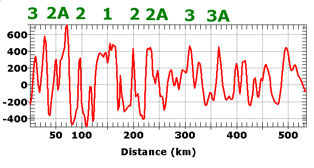
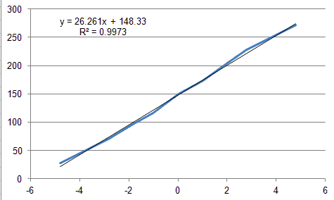

Marine Magnetics Lab
We have marine magnetic profile data collected near the Tula Fracture Zone
in the southern Pacific Ocean. The data set has profiles from 64 cruises.
For three cruises you have an extract, with just the data from a straight part
of the cruise, and where they cruised mostly perpendicular to the ridge. In one case the profile has been reversed, so they will all
plot west to east. You should use these extracts for the detailed
analysis. These profiles are:
- ELT19 (1965). The Eltanin 19 cruise was one of the most important for the acceptance of plate
tectonics, and you should look at it particularly carefully.
- MRTN06WT (1984)
- WEST03MV (1994)
Some of the profiles in the larger database are hard to interpret because:
- They did not collect much data.
- The missing data is incorrectly coded. This is
"ancient" data, collected in analog fashion, and had to be
digitized.
- They have a number of segments, in different directions, and
you would have to look at each segment individually.
USNS Eltanin History
Deliverables. Prepare a report on the magnetics of this region, with the following points:
- Include a map showing all the magnetic data, and the
profiles you analyzed. Insure this has latitude and
longitude labels (you want a deliberate export to the clipboard,
or label the grid inside the map).
- Find the full Eltanin 19 profile and compare it to the
subset profile.
Label the anomalies, and compute the spreading rate on each side
of the ridge for the subset. Does the spreading appear to be symmetrical
on the two sides of the ridge?
- Correlate the other two profiles to Eltanin 19.
- Two profiles have a
crossover (go over the same point).
If you identify anomalies near the crossover, it should be the
same anomaly on each profile. Comment on this.
- One profile (MRTN06WT) is much longer than the other two. Based
on the spreading rate close to the ridge, how far back in time
do you think the profile covers? What anomaly would that
be? Can you recognize any distinctive anomalies on that
profile (you should identify the distance or longitude of at
least one that you think would be distinctive)? Do not try
to do all the correlations, and do not go beyond anomaly 6 in
any detail. Do you see anything in the bathymetry that suggests that
there might be complications in the history of this
profile?
- Compare the spreading rates you computed with the MORVEL and
one of the NUVEL models. You can use
MICRODEM or a
Plate motion calculator.
Directions.
Review
Labs introduction.
Change program version to
geology.
Go to File, Geology labs, Tula Fracture Zone magnetic anomalies. This
will download the data. It will be in
c:\mapdata\tula_fracture_zone
if you want to reload, or you can just use the menu choice which will be fast
once the data has downloaded. If the file does not download, get it at
https://www.usna.edu/Users/oceano/pguth/downloads/tula_fracture_zone_v2.zip,
unzip and load on a bathymetry data set.
- The magnetic anomalies will plot on the map with color
according to the anomaly value, with a range of -500 to 500. You can adjust the line thickness.
-
 Subset
& zoom to get just the map to cover just the area with the data.
Subset
& zoom to get just the map to cover just the area with the data.
- If you want, you can change the map display to grayscale
reflectance (or slope, reverse grayscale) so color only shows the anomalies.
-
 Table of contents to hide/show
the magnetic anomaly files.
Table of contents to hide/show
the magnetic anomaly files.
To see the profiles in profile view:
- Double click on the record in the
data base table window.
This will be easiest on the extracted files with a single
profile, but it will also work in the full database.
- Pick Views, and then either:
- 3D shapefile profile (distance)
- 3D shapefile profile (longitude)--since
these profiles run almost east-west, this will
be almost the same as by distance, except that it will be much
harder to get distances to get spreading rates.
- Resize the graph window with the profiles by dragging, then right click, and
Resize image. You want the
anomalies to be distinct.
- You can
adjust the line thickness and it will be a continous line by
default (watch for missing data).
- Right click on the graph, pick Open profile. In
that view you can right click and set the extents
manually if you do not want to see the entire profile.
Quick Profile Exploration
to cycle through all the profiles for the full file to get a sense of what they
show.
|
 |
Example on the Juan de Fuca Ridge. Magnetic anomaly
profile, with the anomalies picked. It is easiest to first find
the ridge, remembering that the symmetry of anomaly 1 varies with the
latitude and orientation of the profile.
The magnetic time scale
- Graphical format.
- Tabular form with
 Geology options
(Cande and Kent time scale) inside MICRODEM Geology options
(Cande and Kent time scale) inside MICRODEM
- Magnetic model
lets you get profiles for any time interval desired. You can
experiment with profiles to see how the various parameters affect
them.
|
|
Anomaly |
Age |
Distance |
|
3 |
-4.8 |
28 |
|
2A |
-2.8 |
72 |
|
2 |
-1.86 |
96 |
|
|
-1.03 |
116 |
|
1 |
0 |
150 |
|
|
1.03 |
174 |
|
2 |
1.86 |
199 |
|
2A |
2.8 |
228 |
|
3 |
4.8 |
272 |
|
3A |
6.2 |
365 |
|
Table created in Excel with the picks. Age is marked as
negative to the left of the ridge, which makes the next step easier, but
it could be done as two separate computations (which would be required
if the spreading were markedly asymmetrical). The unnamed anomaly
is the Jaramillo normal event during a reversed interval. |
|
 |
Graph of age versus distance in Excel. The slope of the line will be
spreading rate in km/My (or mm/yr), and in this case the value is about
26 km/My, which would make it a slow spreading ridge (indeed the case for the
Juan de Fuca Ridge). The line is
very linear, suggesting a very constant spreading rate over this
interval, and that spreading is symmetrical. There are about 200 km on
the profile to the east of where we stopped picking anomalies.
With the calculated spreading rate, that should be another 8 My, with
the oldest crust on the right about 14 My old. If this is the
case, anomalies 4, 4A, 5, and 5A should be present, but with the slow
spreading, they may not be clearly defined (note that 3 and 3A are not
as distinct as we might like). |
The ideal profile for looking at the magnetic anomalies will run
perpendicular to the crest of the ridge. If the profile crosses the ridge
at an angle, you will have to reduce the distances by multiplying by the cosine
of the angle between the track and perpendicular to the ridge. If the
profile crosses a fracture zone, you will either have anomalies missing, or
repeated anomalies.
If the cruise makes multiples
passes over the ridge to "mow the lawn", you want to look at the survey legs
individually.
We have looked at other data sets which might help your interpretation.
You should be able to pick out ridges and transforms on the bathymetry.
Last revision
3/8/2021